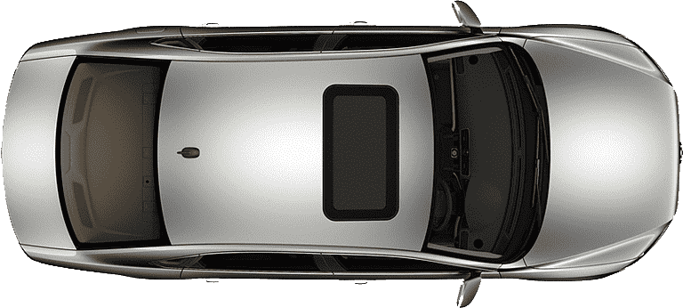
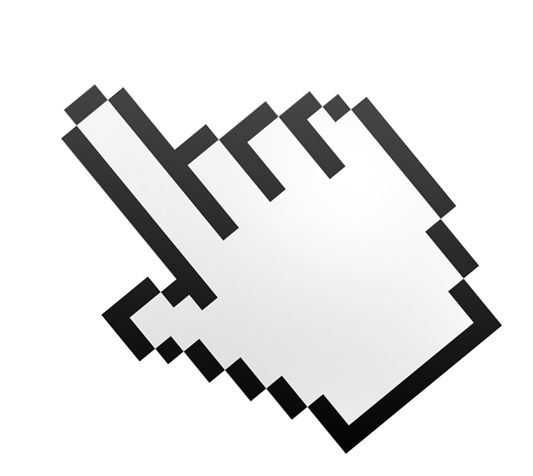

이벤트 객체
이벤트 객체란 이벤트가 가기고 있는 기능(Method)이나 정보속성(Property)
키보드 이벤트 객체속성
- key : 키 이름값을 반환
- keyCode : 키보드의 키 코드값을 반환
- ctrlKey
- altKey
- shiftKey
마우스 이벤트 객체속성
- clientX / clientY : 마우스의 화면좌표값(고정)좌표값
- pageX / pageY : 마우스의 도큐먼트(body)의 좌표값
- screenX / screenY : 모니터의 화면좌표
- offsetX / offsetY : 선택자 영역의 좌표값

